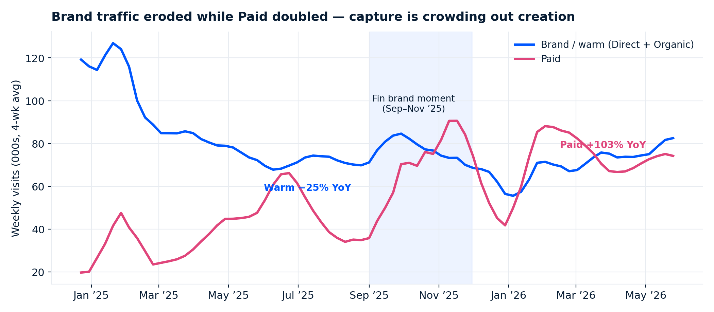
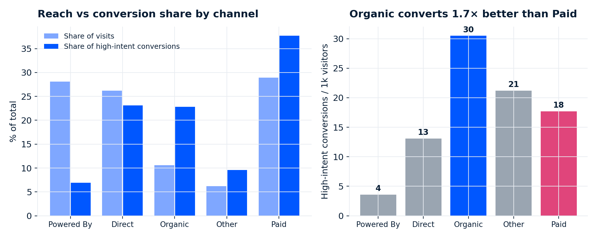

Launch-quarter brand push: Fin-surface traffic 5.7× (sustained 8+ months), inbound MQLs +6%, S1 conversions +20% (397 → 475) vs prior quarter. Brand investment produced more and better pipeline.
Paid visits +103% YoY but Paid conversion efficiency fell 24% — and total inbound MQLs still dropped 28%. Capture harvests demand; it can’t replace creating it. Paid is now 42% of marketing visits, up from 15%.
utm_source is Direct/Unknown on 45.6K of 45.8K MQLs. Attribution can’t prove any channel’s MQL quality today — paid included. Fixing capture is a zero-cost prerequisite for every ROI debate, and last-touch already under-credits brand.
| Investment | $ | Evidence |
|---|---|---|
| Quarterly Fin brand moments launch-grade campaigns · events · PR |
$1.5M | Sep ’25 moment: 5.7× sustained Fin traffic, +20% S1 q/q |
| EMEA brand program (SB / MM) | $0.9M | Pipeline share already matches traffic share; SB 11.8% / MM 8.8% S1 — proven conversion |
| APAC activation fix + localized test | $0.3M | 17% of warm traffic → 2.7% of S1s; repair the leak before scaling spend |
| Organic/content + Powered By recovery | $0.3M | Organic = best efficiency (30.5 conv/1k); PB break cost 72% of free reach |
| Total — funded by trimming the least-efficient marginal paid capture | $3.0M |
From recovering half the warm-traffic decline at the current 8.6% S1 rate. Sensitivity: +215/yr at the old 6.5% rate · +570/yr on full recovery. Recovery is already starting (Apr–May ’26 +3.8% YoY).